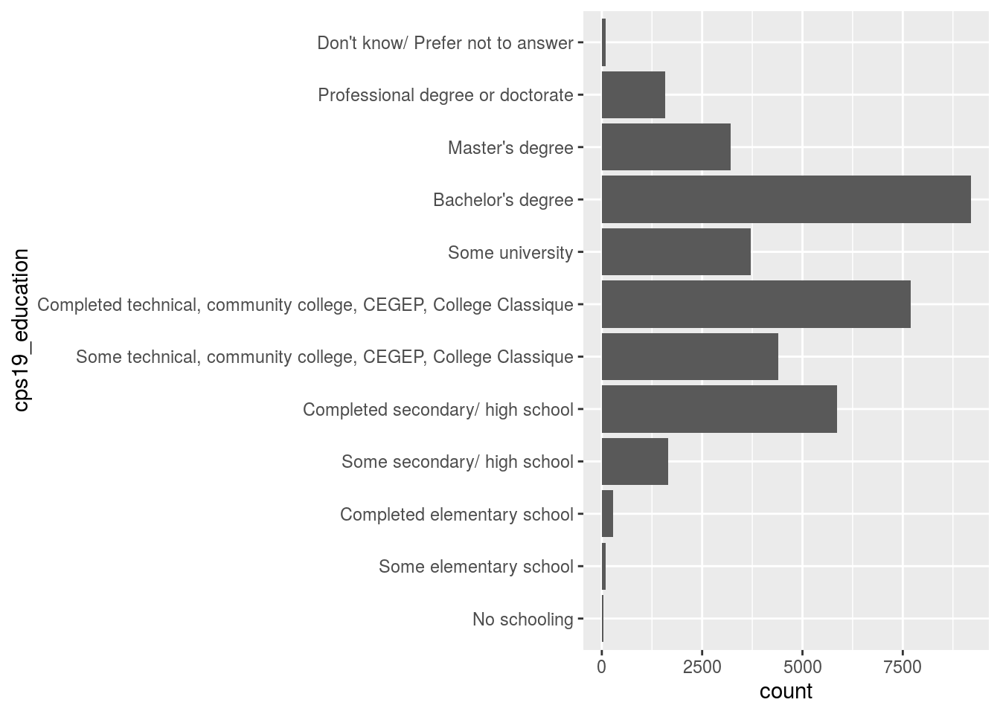

Abstract
This CES study is used to gather Canadians’ attitude about the federal election in 2019.
Introduction
This Canadian Election Study: ces2019_web is an online survey which collect the basic information about people and their attitude to different parties and governement. This survey is to study the reason why people vote for a specific party, and what feature of people will affect the vote result. I generated a geom_bar which shows the count of people of different education category. I found that most people in our data set are well educated. Most of them are over college and Bachelor’s degree. In the paper, we first showed how we get the data, then we discussed the data set we use, and finally we did data analysis using ggplot and discussed the graph we generated. The weakness of this data set is that there are too many data with NA, which is meaningless.
get_cescodes()
## index ces_survey_code get_ces_call_char
## 1 1 ces2019_web "ces2019_web"
## 2 2 ces2019_phone "ces2019_phone"
## 3 3 ces2015_web "ces2015_web"
## 4 4 ces2015_phone "ces2015_phone"
## 5 5 ces2015_combo "ces2015_combo"
## 6 6 ces2011 "ces2011"
## 7 7 ces2008 "ces2008"
## 8 8 ces2004 "ces2004"
## 9 9 ces0411 "ces0411"
## 10 10 ces0406 "ces0406"
## 11 11 ces2000 "ces2000"
## 12 12 ces1997 "ces1997"
## 13 13 ces1993 "ces1993"
## 14 14 ces1988 "ces1988"
## 15 15 ces1984 "ces1984"
## 16 16 ces1974 "ces1974"
## 17 17 ces7480 "ces7480"
## 18 18 ces72_jnjl "ces72_jnjl"
## 19 19 ces72_sep "ces72_sep"
## 20 20 ces72_nov "ces72_nov"
## 21 21 ces1968 "ces1968"
## 22 22 ces1965 "ces1965"
get_ces("ces2019_web")
## TO CITE THIS SURVEY FILE:
##
## - Stephenson, Laura B; Harell, Allison; Rubenson, Daniel; Loewen, Peter John, 2020, '2019 Canadian Election Study - Online Survey', https://doi.org/10.7910/DVN/DUS88V, Harvard Dataverse, V1
##
## - Stephenson, Laura, Allison Harrel, Daniel Rubenson and Peter Loewen. Forthcoming. 'Measuring Preferences and Behaviour in the 2019 Canadian Election Study,' Canadian Journal of Political Science.
##
## LINK: https://dataverse.harvard.edu/dataset.xhtml?persistentId=doi:10.7910/DVN/DUS88V
ces2019_web <- to_factor(ces2019_web)Data discussion
The ces2019_web dataset is collected from Canadian citizens and permanent residents at least 18 years old in 2019. The columns include candidates’ citizenship, age, gender, living province, education degree, the main issue they are interested in, different attitude to parties about some issues, voting plan.
Graph
get_cescodes()
## index ces_survey_code get_ces_call_char
## 1 1 ces2019_web "ces2019_web"
## 2 2 ces2019_phone "ces2019_phone"
## 3 3 ces2015_web "ces2015_web"
## 4 4 ces2015_phone "ces2015_phone"
## 5 5 ces2015_combo "ces2015_combo"
## 6 6 ces2011 "ces2011"
## 7 7 ces2008 "ces2008"
## 8 8 ces2004 "ces2004"
## 9 9 ces0411 "ces0411"
## 10 10 ces0406 "ces0406"
## 11 11 ces2000 "ces2000"
## 12 12 ces1997 "ces1997"
## 13 13 ces1993 "ces1993"
## 14 14 ces1988 "ces1988"
## 15 15 ces1984 "ces1984"
## 16 16 ces1974 "ces1974"
## 17 17 ces7480 "ces7480"
## 18 18 ces72_jnjl "ces72_jnjl"
## 19 19 ces72_sep "ces72_sep"
## 20 20 ces72_nov "ces72_nov"
## 21 21 ces1968 "ces1968"
## 22 22 ces1965 "ces1965"
get_ces("ces2019_web")
## TO CITE THIS SURVEY FILE:
##
## - Stephenson, Laura B; Harell, Allison; Rubenson, Daniel; Loewen, Peter John, 2020, '2019 Canadian Election Study - Online Survey', https://doi.org/10.7910/DVN/DUS88V, Harvard Dataverse, V1
##
## - Stephenson, Laura, Allison Harrel, Daniel Rubenson and Peter Loewen. Forthcoming. 'Measuring Preferences and Behaviour in the 2019 Canadian Election Study,' Canadian Journal of Political Science.
##
## LINK: https://dataverse.harvard.edu/dataset.xhtml?persistentId=doi:10.7910/DVN/DUS88V
ces2019_web <- to_factor(ces2019_web)
library("tidyverse")
## ── Attaching packages ────────────────────────────────────────── tidyverse 1.3.0 ──
## ✓ ggplot2 3.3.2 ✓ purrr 0.3.4
## ✓ tibble 3.0.3 ✓ stringr 1.4.0
## ✓ tidyr 1.1.2 ✓ forcats 0.5.0
## ✓ readr 1.3.1
## ── Conflicts ───────────────────────────────────────────── tidyverse_conflicts() ──
## x dplyr::filter() masks stats::filter()
## x dplyr::lag() masks stats::lag()
ces2019_web %>% ggplot(aes(x=cps19_education)) + geom_bar() + coord_flip()
Graph discussion
From this graph, we can see the people who voted mostly have over Bachelor’s degree and college degree. People who only have elementary school or high school degree takes very small percentage of the data set. From here, we know our result is mainly from those people who is knowledgeable.
References
- Wickham et al., (2019). Welcome to the tidyverse. Journal of Open Source Software, 4(43), 1686, https://doi.org/10.21105/joss.01686
- Yihui Xie (2020). blogdown: Create Blogs and Websites with R Markdown. R package version 0.20.
- Hadley Wickham, Jim Hester and Winston Chang (2020). devtools: Tools to Make Developing R Packages Easier. https://devtools.r-lib.org/, https://github.com/r-lib/devtools.
- Paul A. Hodgetts and Rohan Alexander (2020). cesR: Access the CES Datasets a Little Easier.. R package version 0.1.0.
- Hadley Wickham, Romain François, Lionel Henry and Kirill Müller (2020). dplyr: A Grammar of Data Manipulation. https://dplyr.tidyverse.org, https://github.com/tidyverse/dplyr.
- Joseph Larmarange (2020). labelled: Manipulating Labelled Data. R package version 2.7.0. https://CRAN.R-project.org/package=labelled